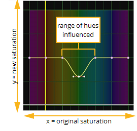

原始图像。
核武器 的 HueCorrect 节点允许您对一系列色调中的饱和度级别进行精确调整。您可以通过编辑一系列抑制曲线来执行此操作。
|
 |
| 编辑抑制曲线。 |
通过选择要编辑的曲线以及修改的曲线的数量，可以精确地限制效果的影响。
对于合成器来说，HueCorrect 显然是减少绿色、蓝色或红屏溢出的最大用途。
| 1。 | 单击 颜色 > HueCorrect 在脚本中的适当位置插入节点。 |
| 2. | 将查看器连接到 HueCorrect 节点的输出，以便您可以看到更改的效果。 |
| 3. | 在 HueCorrect 属性面板中，选择要影响的通道: |
• 单击 Sat 平等地影响所有通道 (红色、绿色、蓝色和 alpha)。
• 单击 Lum 影响所有通道，但亮度加权有效 (意味着红色通道接收大约 30% 的效果; 绿色，60%; 蓝色，10%)。
• 单击 红色 要仅在红色通道上应用曲线作为查找，请在曲线上查找像素的色调，然后将像素中的红色值乘以查找结果。
• 单击 绿色 要将曲线仅应用于绿色通道上的查找，请在曲线上查找像素的色调，然后将像素中的绿色值乘以查找结果。
• 单击 蓝色 要仅将曲线作为蓝色通道上的查找应用，请在曲线上查找像素的色调，然后将像素中的蓝色值乘以查找结果。
• 单击 R_sup 应用抑制功能来降低红色通道的水平。当红色曲线用于将红色通道直接乘以曲线值时，r_sup 曲线用于控制红色通道被抑制的量。
• 单击 G_sup 应用抑制功能来降低绿色通道的水平。虽然绿色曲线用于将绿色通道直接乘以曲线值，但 g_sup 曲线用于控制绿色通道被抑制的量。
• 单击 B_sup 应用抑制功能以降低蓝色通道的电平。当蓝色曲线用于将蓝色通道直接乘以曲线值时，b_sup 曲线用于控制蓝色通道被抑制的量。
请注意，可以选择多条曲线，以便参照另一条曲线编辑一条曲线。
| 4. | 如有必要，将光标拖动到查看器上，对代表要更正的图像部分的图像像素进行采样。然后，在 HueCorrect 属性面板中，按 Ctrl + Alt ( Cmd + Alt 在 Mac 上)，同时在曲线上单击以在曲线上绘制特定像素的值。这使您可以查看要编辑的曲线的哪一部分。 |
| 5. | 根据需要编辑曲线-通常这意味着向下拖动要抑制的色调区域中的控制点。 |
| 6. | 要控制在颜色校正后保留多少原始亮度，请启用并调整 混合亮度 。值 0 表示在输出图像中使用改变的亮度。值为 1 会产生接近原始输入图像的亮度值。 |
|
|
|
原始图像。 |

|

|
| 混合亮度 设置为 0。 | 混合亮度 设置为 1。 |
注意: 当 混合亮度 设置为 1 时，生成的亮度值接近原始亮度，但不完全相同。差异可能因应用于源图像的颜色校正而异。
|
|